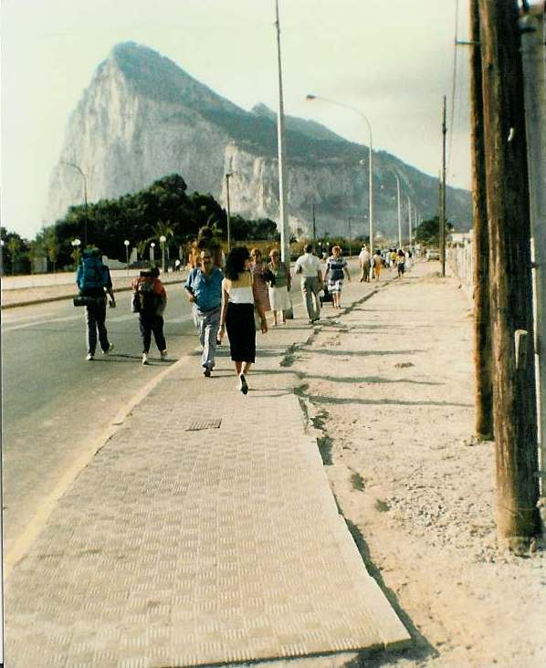

Inter Rail 1986 Day 11
Tuesday 2nd September 1986

Woke up at 8.00am. Was a little bit cold in my sheet but not too bad. Did manage to get 3 hours sleep. The New
Zealand guys woke up in time for us to say goodbye. Sussed out the train times to Gibraltar. All six of us decided that before making the trip
a cup of coffee was in order. The train to Gibraltar turned out to be a bendy bus to Gibraltar. The journey took us 45 minutes and the bus
dropped us off 5 minutes walk from the Spanish/British border.
Got another Spanish exit stamp in the passport on their side of the border and got a cheery wave and a no camping warning from the British
police on our side. After crossing the airport runway and using the maps provided at the border, headed for the health centre to try and get
some treatment for Michael who was coming out in nasty blisters after being out in the sun too long a few days earlier.
At the health centre we found that as foreign nationals (as a Spahish type informed us we were) we couldn't get free health treatment but
would have to consult a doctor privately as that was the way it was done in Gibraltar. If we'd tried to get treatment back in Spain with our
E111 forms we'd have got the treatment free.
Eli, who had walked up to the hospital for a second opinion found out that it was policy in order to keep taxes down. There are so few
Gibraltarians travelling to the EU in comparison to the number of EU types entering Gib that they would always lose out so they only treat you
as a non-Gibraltarian if you are actually taken ill in Gib.
Jon and I wandered off to the tourist office. Found that accommodation wasn't that available or that cheap. We ended up having to have 3 2's
in The Queen's Hotel at £8 a throw. Mass money changing ensued. Got settled and had baths, showers, washes etc plus a well deserved sit
down. Had to wait awhile before we set off out as Michael had to burst an enormous blister!
Walked up to the London Bar and had a pint of Double Diamond plus a full English breakfast. The radio in the pub was the BFBS service and
every 30 minutes we had the news headlines from the BBC. Before leaving for Morocco I had promised to phone home as soon as we got back. I
dutifully phoned home two days earlier than forecast and said I'd explain why when we got back!!
Realised we had lost Roger somewhere along the line so headed back to the hotel where we found him and headed back to the London Bar. Had a
couple of beers and then unfortunately found out they'd stopped serving food so Roger was not best pleased.
We transferred our custom to the Old Vic and had a beer whilst Roger ate. Custom was then transferred to the Angry Friar where vast quantities
of Bass were consumed both inside and outside the premises. We eventually staggered out of there and back to the hotel just in time to buy a
few more beers at the hotel bar before it shut for the night.
These beers were consumed on the balcony and the previous days exploits were discussed in some detail. Eli and I spent ages talking in bed
after Roger & Jon departed and finally settled to sleep at 3.00am.